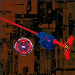

Advance Eterner
| Advance Eterner | |
|  | |
| Number: | MA-14 |
|---|---|
| System: | HMS |
| Type: | Survival |
Contents
| Languages: English|français|italiano |
Bit Protector (BP): Heavy Metal Emblem
The Bit Protector of this Beyblade is Heavy Metal Emblem. It is the first mould verson of Bit Protectors.
Attack Ring (AR): Advance Survivor
- Weight: 18 grams
The ABS Caul is composed of a symmetrical circular piece with four spikes which extend outwards between the four metal projections. These are often worn down through extended use, although this does not affect the Attack Ring?s usability.
This AR has a reversible metal sub ring, which is perfectly circular with four small rounded protrusions, making it perfect for Survival and Spin Stealing. By removing the top plastic portion of the AR, the ABS Caul, and reversing the metal sub ring, the orientation of these four notches can be reversed, hence making it suitable for both Right and Left Spin customisations. This is especially useful in Spin Stealing customisations, as highlighted below.
Use in Spin Stealing Customization
Advance Survivor is a good Attack Ring for Spin Stealing, with its round shape and small protrusions, which help to steal spin:
- AR: Advance Survivor (Advance Eterner)
- WD: Reverse Defenser ( Dranzer MF RBA4 Secret Black Ver., Dranzer RBA5 Yellow Ver.)
- RC: Bearing Core (Wolborg MS) or Bearing Core 2 (Jiraiya MS)
Advance Survivor?s configuration should have the rounded edge facing the Spin Direction: for example, if using Advance Survivor in Left Spin, the rounded edge should be facing counter-clockwise.
Select your RC depending on the situation. If you expect to see more Attackers and older Stadiums or Tornado Balance Type S, you should select Bearing Core 2 to prevent knock out. If you expect to see Defense or Survival type Beyblades and Stadiums like Tornado Balance or Tornado Attack, you should select Bearing Core as it has better survival than Bearing Core 2.
Weight Disk (WD): Circle Wide
See Circle Wide.
Running Core (RC): Metal Sharp Core
- Weight: 4 grams
Metal Sharp Core features a metal tip, as its name suggests, with a pointed tip. This allows the Beyblade to stay in the centre of the Stadium, with very little or no movement. Metal Sharp is primarily a Survival RC, although it is often overlooked in favour of Wolborg MS's Bearing Core. Initially released with Wyvern DJ, it was seen as a high RPM improvement over Sharp Core, due to its metal tip, therefore preventing high friction. The metal material also increases durability, while its tip shape also helped to alleviate the balance problem of Sharp Core. Metal Sharp Core has good survival due to the lack of friction between the tip and the Stadium floor, and is relatively good at retaining its balance.
Use in Survival Customization
Due to the survival Metal Sharp Core can achieve, it is often seen as a good alternative to Bearing Core and Bearing Core 2:
- AR: Advance Balancer (Advance Averazer)
- WD: Circle Wide
- RC: Metal Sharp Core
Other Versions
- Advance Eterner ? HMS Random Booster ACT 4 (Light Blue)
- Advance Eterner ? HMS Random Booster ACT 4 (Combat Green)
Gallery
Overall
Advance Eterner has a number of useful parts. Metal Sharp Core is the best alternative to Bearing-based Running Cores for Survival, while Advance Survivor is a great choice for Spin Stealing and Survival customizations; the ability to reverse the Metal Frame to suit the Spin Direction is a clever and welcome addition.